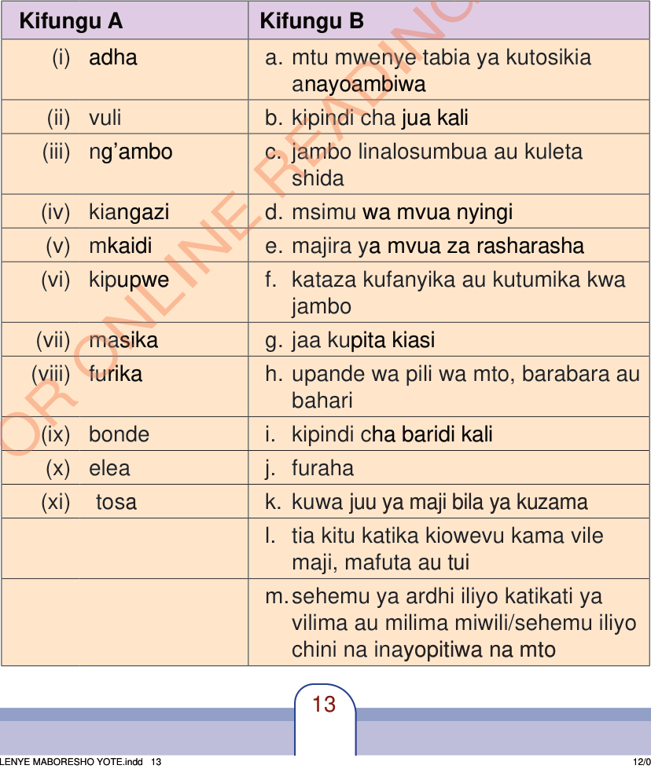

Zoezi la 4: Mazoezi ya lugha
A. Oanisha maneno ya Kifungu A kwa kuchagua jibu sahihi kutoka Kifungu B.
Mfano: (i) adha (c) jambo linalosumbua au kuleta shida

Jedwali la Kifungu A na Kifungu B
| Kifungu A | Kifungu B |
|---|---|
| (i) adha | a. mtu mwenye tabia ya kutosikia anayoambiwa |
| (ii) vuli | b. kipindi cha jua kali |
| (iii) ng’ambo | c. jambo linalosumbua au kuleta shida |
| (iv) kiangazi | d. msimu wa mvua nyingi |
| (v) mkaidi | e. majira ya mvua za rasharasha |
| (vi) kipupwe | f. kataza kufanyika au kutumika kwa jambo |
| (vii) masika | g. jaa kupita kiasi |
| (viii) furika | h. upande wa pili wa mto, barabara au bahari |
| (ix) bonde | i. kipindi cha baridi kali |
| (x) elea | j. furaha |
| (xi) tosa | k. kuwa juu ya maji bila ya kuzama |
| l. tia kitu katika kiowevu kama vile maji, mafuta au tui | |
| m. sehemu ya ardhi iliyo katikati ya vilima au milima miwili, au sehemu iliyo chini na inayopitiwa na mto |